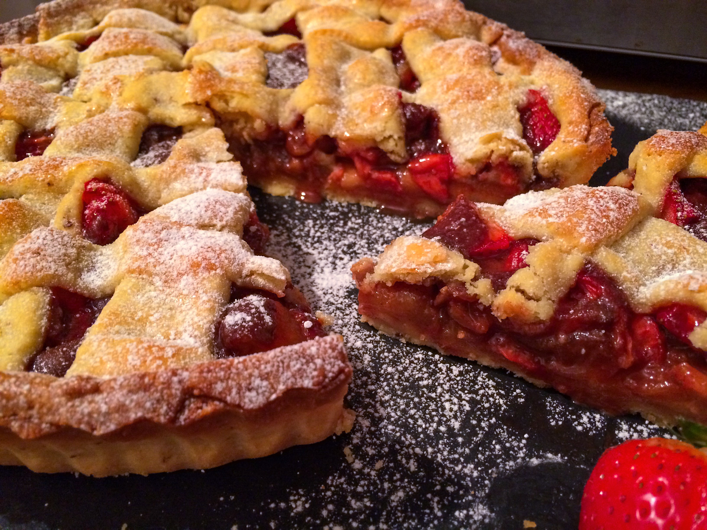

Apple Strawberry Pie
Introduction

Apple Strawberry pie is a very amazing pie. There are many ways to make it however down below its a very tasty recipie.
13th and 14th century pies differed from today’s pie. Since they didn’t have sugar and the pastry were not to be eaten.
The pie is round and crisp on the top with strawberry and apple in the middle. It needs to be cooked gently as the strawberry
could potentially soak into the crust. This is the perfect recipe you need to make strawberry apple crisp pie.
Ingredients
These are the few and marvelous ingredients to make it.
- 3 teaspoons cinnamon
- 2 pounds of apples
- 1 pound of strawberries
- 1 teaspoon vanilla extract
- 1 recipe double crust sour cream pie dough, OR all-butter crust, OR your favorite pie crust recipe
- ½ teaspoon ground allspice
- 1 cup to 2 cup sugar, depending on how sweet you like your pie
- 3 tablespoons all-purpose flour for thickening
- 1 tablespoon lemon juice or apple cider vinegar
- 1 large egg yolk and cream
Instructions
- Peel, core, and slice the apples and strawberries
- Make the pie filling
- Prepare oven 375°F
- Roll out the dough and line bottom pie plate
- Place apples and strawberries on the bottom crust
- trim and crimp edges
- Brush with egg wash, cut vents
- Bake
- Cool